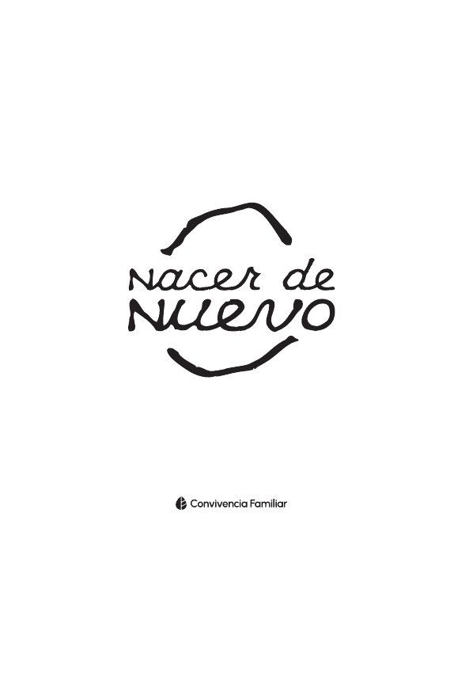

Teodicea: Cristo, la cruz y la restauración
Una defensa de la bondad de Dios frente al mal, a través de la Torá, los Profetas, el Nuevo Testamento y la historia de la iglesia, cuya respuesta final se encuentra en Cristo y la cruz.
Leer (PDF) →Enseño la Biblia para que más personas descubran que el evangelio de Jesucristo no comienza en Mateo, sino en las primeras páginas de Génesis. Aquí encontrarás mis libros, videos, ensayos y el ministerio que dirijo.
Soy Daniel Lira Serhan, maestro de la Biblia y autor de la serie de libros Orígenes: El evangelio en Génesis, en la que muestro cómo el mensaje de Cristo está presente desde el principio de las Escrituras.
Actualmente curso una maestría en Talbot School of Theology (Biola University) y anteriormente estudié en Dallas Baptist University. Mi deseo es que la enseñanza bíblica sea fiel al texto, clara y útil para la vida de la iglesia.
Dirijo Intensivo Convivencia, un programa de discipulado para jóvenes que busca que conozcan a Cristo, lo experimenten, crezcan en comunidad y sirvan a la iglesia. También comparto enseñanza bíblica en mi canal de YouTube.
Vivo en Monterrey, México, y sirvo en la iglesia Convivencia Familiar Monterrey.
Nací en una familia cien por ciento musulmana. Mi mamá y mi abuelo eran musulmanes, y crecí en Torreón, en la mezquita que construyó mi abuelo. Para mí, Jesús era solo un profeta más. Un día, un conocido me escribió por chat: “¿Tú conoces a Jesús? ¿Ya te lo presentaron?”. Le contesté de mala gana y no volví a hablar con él, pero esa pregunta se quedó conmigo y cambió el rumbo de mi vida.
Vivía en Estados Unidos y todo parecía ir bien, pero empecé a sentir un vacío profundo y regresé a México. Seguía identificándome como musulmán, aunque en el fondo ya no creía en Dios. En Monterrey me aferré a la idea de que la verdad no existe y de que cada quien construye la suya, pero todo lo que construía se derrumbaba una y otra vez. En medio de esa oscuridad, mi papá llegó a Cristo y comenzó a hablarme de Jesús.
Durante cuatro años platiqué con budistas, hindúes, testigos de Jehová, musulmanes y chamanes, investigué y leí como nunca. Todas las noches oraba: “Si eres real, háblame”. Por fin me atreví a abrir la Biblia y leer el Evangelio de Juan. En el capítulo 4, Jesús le dice a la mujer samaritana: “Yo soy el que habla contigo”. Sentí que me miraba a los ojos y me decía: “Llevo años hablándote; eres tú el que no escucha”. Desde entonces, mi vida le pertenece.
Enseñanza bíblica para entender lo que la Escritura dice y por qué importa.

Video destacado: ¿Cómo saber si la Biblia dice la verdad? (Mi historia de musulmán a cristiano)
Visita mi canal de YouTubeOrígenes
El evangelio en GénesisOrígenes es una serie de cinco libros que acompaña al lector en su proceso de descubrir quién es Dios y enamorarse de Él. Es una guía del lector por los primeros cinco libros de la Biblia, la Torá o Pentateuco (Génesis, Éxodo, Levítico, Números y Deuteronomio), para descubrir sus patrones y el hilo conductor de las Escrituras: juntos dan el mensaje del evangelio y responden cuál es nuestro origen, nuestro propósito y nuestro destino.
El primer libro, Orígenes: El evangelio en Génesis, comienza “en el principio”: el origen de todas las cosas, el momento en que entró la corrupción y el plan de Dios para restaurarlo todo. Recorre la creación, el diseño del ser humano a imagen de Dios, los dos árboles del Edén y la caída, mostrando cómo Génesis da un vistazo a toda la historia de la humanidad y responde preguntas fundamentales.
Próximamente disponibleMientras tanto, disponible la edición 1:

Nacer de nuevo (segunda edición, 2026), escrito por Luis Ortiz, Daniel Lira y Rodrigo Weigend, parte de la historia de Nicodemo y la invitación de Jesús al Reino de Dios para explicar qué significa nacer de nuevo. Recorre nuestra naturaleza corrupta y la obra de Dios que nos hace su obra maestra, y explica el bautismo en agua: de dónde viene y por qué bautizarse. Termina con los siguientes pasos: confiar en Dios, convertirte en quien ya eres, conocer la gran historia e integrarte a la iglesia.
Ensayos académicos escritos durante mis estudios teológicos.
Una defensa de la bondad de Dios frente al mal, a través de la Torá, los Profetas, el Nuevo Testamento y la historia de la iglesia, cuya respuesta final se encuentra en Cristo y la cruz.
Leer (PDF) →Un ensayo exegético de Efesios 1 sobre la obra del Padre, el Hijo y el Espíritu a favor del creyente en Cristo, para la gloria de Dios.
Leer (PDF) →La vergüenza y el miedo de Génesis 3 como fruto del pecado, y la gracia de Dios que cubre al ser humano.
Leer (PDF) →Reads Jeremiah 17:5–13 as poetic commentary on Deuteronomy, contrasting the way of death with the way of life.
Read (PDF) →Shame and fear in Genesis 3 as the fruit of sin, covered by God's grace.
Read (PDF) →The church built on the trinitarian work of God described in Ephesians 1:1–14.
Read (PDF) →The problem of evil traced across the Bible, Second Temple Judaism, the Church Fathers, and modern debates.
Read (PDF) →An overview of the modern Messianic Jewish movement and a Christian response.
Read (PDF) →A review of Spilsbury's reader's guide to the book of Revelation.
Read (PDF) →Intensivo Convivencia es un programa de discipulado para jóvenes que busca formar una fe sólida y centrada en Jesús. Se basa en cuatro pilares: